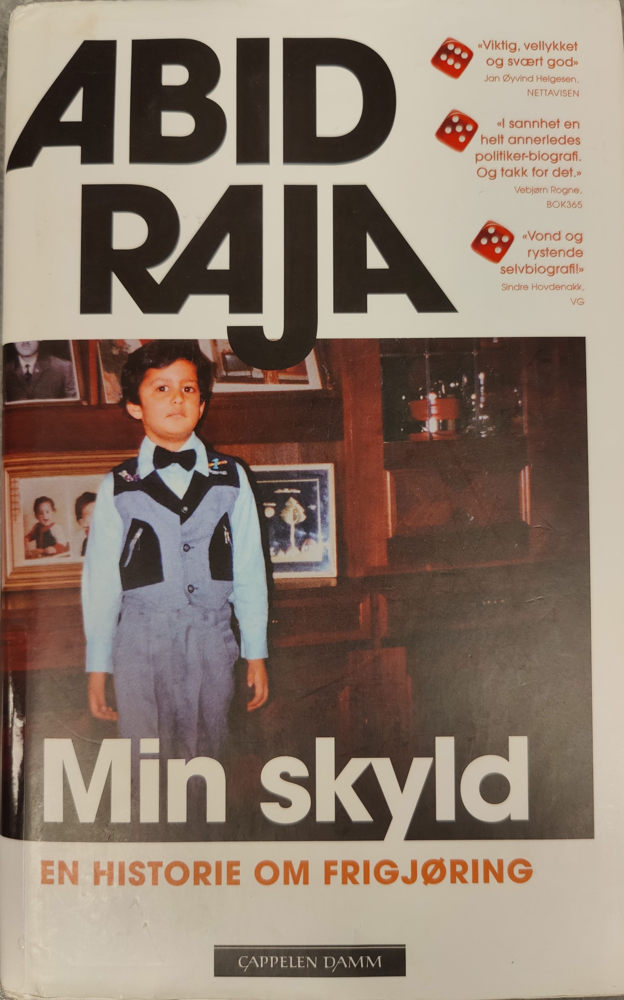

Min skyld
Om boka
Tidligere kulturminister Abid Raja er blitt kalt breial, brautende,
poserende og dominerende.
Hans liv har handlet mye om det motsatte:
Om å skjule smertene og handikappet han ble født med, å skjule seg
for volden og mobbingen - og å skjule kjærligheten til den han elsker.
Skyldfølelsen hans - en blanding av skam og frykt, har hindret ham
i å kjenne på de andre følelsene han som menneske er utstyrt med.
Alt han har kjent, er et voldsomt sinne.
Da han som voksen oppsøkte
en erfaren, kvinnelig psykolog for å få hjelp til å beherske temperamentet
sitt, spurte hun: «Har du noen idé om hvor det sinnet kommer fra?
Er det noe annet i livet ditt som du egentlig er sint for?»
Dette er den brutalt ærlige historien om Abid Rajas turbulente
klassereise, hans mangeårige kamp for kjærligheten og den
smertefulle frigjøringen fra skam, skyld og utenforskap.